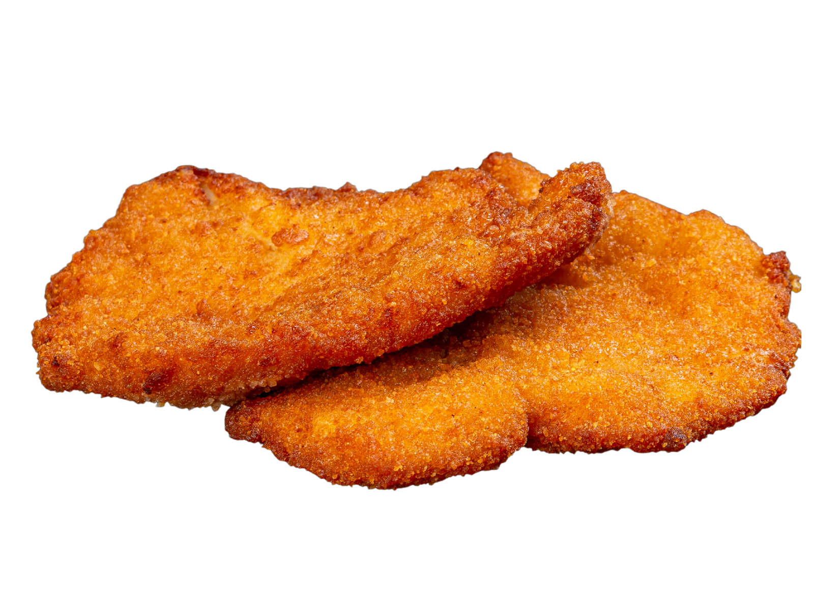

Recept na rizky

Suroviny:
- 200g kureciho masa (idealne prsni)
- 1 vejce
- sul
- mleko
- strouhanka
- olej
- mouka
Postup:
- Masíčko nakrájíme na plátky a naklepeme
- Plátky osolíme a obalíme v mouce
- Poté je namočíme do rozšlehaného vejce s trochou mléka
- Nakonec je obalíme ve strouhance
- Na pánvi rozehřejeme olej a smažíme dozlatova